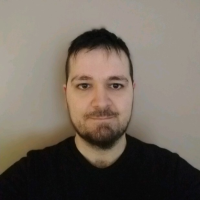

desto
Web dashboard & CLI for managing scripts in tmux sessions. Full-stack with real-time system monitoring, live log viewing, and script scheduling.
View on GitHub ↗
AI Engineer & Machine Learning Research Scientist
Bridging cutting-edge research and real-world impact — across computer vision, bioscience and Earth observation.
Multidisciplinary computational scientist and software engineer at the intersection of Computer Vision, Machine Learning, and Bioscience Engineering — with 10+ years of combined experience across academia, industry, and R&D. Passionate about building systems that turn complex data into actionable insight, from insect optical sensors to planetary-scale satellite imagery.
Optimizing CORSA (VQVAE2) for satellite image compression on edge devices. Designing custom MLOps tooling for experiment tracking and GPU cluster job management.
AI models for the EU Copernicus LCFM project (€11M). Global land cover maps at 10 m resolution. Cloud segmentation for quality-signal identification at planetary scale.
Optical insect identification using AI and edge devices. Built a production AWS API and web dashboard. 5 publications in high-impact journals.
Computer vision & signal processing for industry clients including Bridgestone, Aliaxis, and Vinci Energies. Won company hackathon on Activity Recognition.
Modelling neurophysiological data using deep convolutional networks. 4 publications in top neuroscience journals.
Optimizing VITO's CORSA model — a lightweight VQVAE2 architecture for satellite image compression on edge devices.
Also building internal MLOps tools for experiment tracking and GPU job scheduling.
Previously: EU Copernicus LCFM — global land cover at 10 m, updated annually.
Web dashboard & CLI for managing scripts in tmux sessions. Full-stack with real-time system monitoring, live log viewing, and script scheduling.
View on GitHub ↗Python interface for Copernicus Sentinel data discovery. Interactive map search, dual OData/STAC backends, professional CLI and API.
View on GitHub ↗File organisation & management automation for ML datasets. Categorises and cleans large-scale research datasets, optimising pre-processing workflows.
View on GitHub ↗High-performance Python image tiling for computer vision. Object detection/segmentation preprocessing with multiprocessing and NumPy.
View on GitHub ↗Edge AI motion detection surveillance system on Raspberry Pi with cloud-notified alerts.
View on GitHub ↗Towards automatic insect monitoring on witloof chicory fields using sticky plate image analysis
An introduction to artificial intelligence in machine vision for postharvest detection of disorders in horticultural products
Optical identification of fruitfly species based on their wingbeats using convolutional neural networks
A fresh look at computer vision for industrial quality control
Towards in-field insect monitoring based on wingbeat signals: The importance of practice oriented validation strategies
The ventral visual pathway represents animal appearance over animacy, unlike human behavior and deep neural networks
Representations of regular and irregular shapes by deep Convolutional Neural Networks, monkey inferotemporal neurons and human judgments
Shape selectivity of middle superior temporal sulcus body patch neurons
Representation of semantic similarity in the left intraparietal sulcus: functional magnetic resonance imaging evidence
PhD thesis (KU Leuven): View thesis ↗
PhD in Bioscience Engineering · KU Leuven, Belgium 🇧🇪
Focus: optical insect identification using signal processing, computer vision, and AI/ML/DL.
PhD Research (Neurophysiology) · KU Leuven, Belgium 🇧🇪
Requirements fulfilled early; exited programme. Deep learning models of biological neural responses.
MSc Machine Learning · KTH Royal Institute of Technology, Sweden 🇸🇪
Specialisation: Computational Neuroscience & Spiking Neural Networks. Thesis ↗
BSc Computer Science · Aristotle University of Thessaloniki, Greece 🇬🇷
AI / ML / DL
Web & APIs
DevOps & Cloud
Data & Sensing